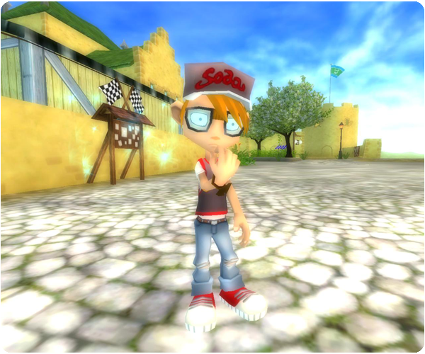

Hi there!
Here is this week's adventurous update!
New quests:

New decorations shop:
There is now a brand new Decoration Shop in West Cape Fishing Village!
Change in quests:
When you are doing quests such as, blacksmithing or baking, you are now so focused that you will not see any of the players around you!